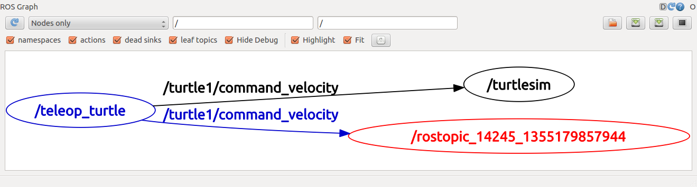
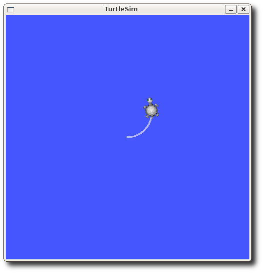
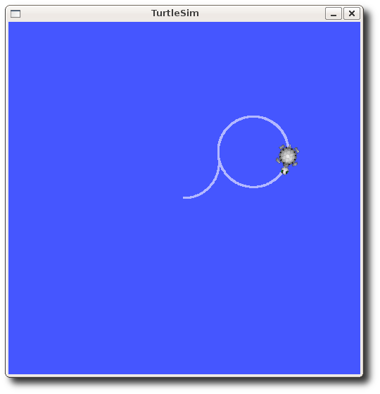
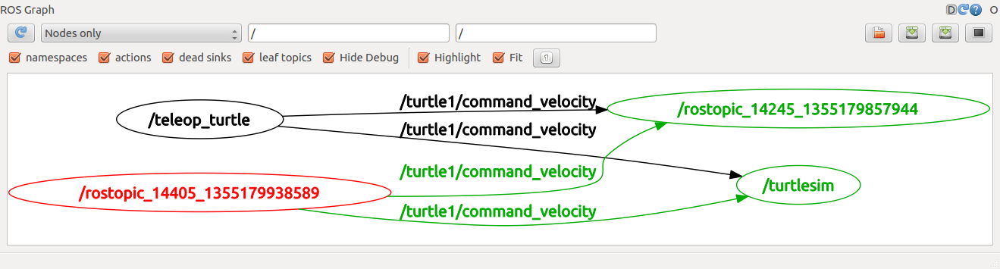

rostopic¶
Prerequisites¶
Start roscore, turtlesim_node, turtle_teleop_key node, and rqt_graph.
Introducing rostopic¶
The rostopic tool allows you to get information about ROS topics.
You can use the help option to get the available sub-commands for rostopic
rostopic -h
rostopic bw display bandwidth used by topic
rostopic echo print messages to screen
rostopic hz display publishing rate of topic
rostopic list print information about active topics
rostopic pub publish data to topic
rostopic type print topic type
Let's use some of these topic sub-commands to examine turtlesim.
Using rostopic list¶
rostopic list returns a list of all topics currently subscribed to and published.
Lets figure out what argument the list sub-command needs. In a new terminal run:
rostopic list -h
Usage: rostopic list [/topic]
Options:
-h, --help show this help message and exit
-b BAGFILE, --bag=BAGFILE
list topics in .bag file
-v, --verbose list full details about each topic
-p list only publishers
-s list only subscribers</code>
For rostopic list use the verbose option:
rostopic list -v
Published topics:
* /turtle1/color_sensor [turtlesim/Color] 1 publisher
* /turtle1/command_velocity [turtlesim/Velocity] 1 publisher
* /rosout [roslib/Log] 2 publishers
* /rosout_agg [roslib/Log] 1 publisher
* /turtle1/pose [turtlesim/Pose] 1 publisher
Subscribed topics:
* /turtle1/command_velocity [turtlesim/Velocity] 1 subscriber
* /rosout [roslib/Log] 1 subscriber</code>
Using rostopic type¶
rostopic type returns the message type of any topic being published.
Usage:
rostopic type [topic]`
rostopic type /turtle1/cmd_vel</code>
geometry_msgs/Twist
We can look at the details of the message using rosmsg:
rosmsg show geometry_msgs/Twist
geometry_msgs/Vector3 linear
float64 x
float64 y
float64 z
geometry_msgs/Vector3 angular
float64 x
float64 y
float64 z</code>
If you can't remember that command, you can also look up geometry_msgs/Twist on the internet. The first hit on a Google search of "geometry_msgs/Twist" lands in the the ROS documentation. From this, you can also see that the message contains two 3D vectors of translational and rotational velocity.
Using rostopic echo¶
rostopic echo shows the data published on a topic.
Usage:
rostopic echo [topic]
turtle_teleop_key node.
This data is published on the /turtle1/cmd_vel topic. In a new terminal, run:
rostopic echo /turtle1/cmd_vel
You probably won't see anything happen because no data is being published on the topic. Let's make turtle_teleop_key publish data by pressing the arrow keys. Remember if the turtle isn't moving you need to select the turtle_teleop_key terminal again.
You should now see the following when you press the up key:
linear:
x: 2.0
y: 0.0
z: 0.0
angular:
x: 0.0
y: 0.0
z: 0.0
---
linear:
x: 2.0
y: 0.0
z: 0.0
angular:
x: 0.0
y: 0.0
z: 0.0
---
Those are the 3D vectors we saw in the documentation. If you'll notice, when you turn, the angular.z data member changes, and when you move forward and backwards, the linear.x value changes.
So, what if we wanted to control the turtle with something other than the turtle_teleop_key node? All we would need to do is publish geometry_msgs/Twist messages on the /turtle1/cmd_vel topic. The turtle will turn if we publish something to the angular.z member, and it will move when we publish something to the linear.x member.
Now let's look at rqt_graph. Press the refresh button in the upper-left corner to show the new node. As you can see rostopic echo, shown here in red, is now also subscribed to the turtle1/command_velocity topic.

ROS Messages¶
Communication on topics happens by sending ROS messages between nodes. For the publisher (turtle_teleop_key) and subscriber (turtlesim_node) to communicate, the publisher and subscriber must send and receive the same type of message. The type of the message sent on a topic can be determined using rostopic type.
Using rostopic pub¶
rostopic pub publishes data on to a topic currently advertised.
Usage:
rostopic pub [topic] [msg_type] [args]
rostopic pub -1 /turtle1/cmd_vel geometry_msgs/Twist -- '[2.0, 0.0, 0.0]' '[0.0, 0.0, 1.8]'

This is a pretty complicated example, so lets look at each argument in detail.
- This command will publish messages to a given topic:
rostopic pub - This option (dash-one) causes rostopic to only publish one message then exit:
-1 - This is the name of the topic to publish to:
/turtle1/cmd_vel - This is the message type to use when publishing the topic:
geometry_msgs/Twist - This option (double-dash) tells the option parser that none of the following arguments is an option. This is required in cases where your arguments have a leading dash
-, like negative numbers.-- - As noted before, a geometry_msgs/Twist msg has two vectors of three floating point elements each:
linearandangular. In this case,'[2.0, 0.0, 0.0]'becomes the linear value withx=2.0,y=0.0, andz=0.0, and'[0.0, 0.0, 1.8]'is theangularvalue withx=0.0,y=0.0, andz=1.8. These arguments are actually in YAML syntax, which is described more in the YAML command line documentation.'[2.0, 0.0, 0.0]' '[0.0, 0.0, 1.8]'
You may have noticed that the turtle has stopped moving; this is because the turtle requires a steady stream of commands at 1 Hz to keep moving. We can publish a steady stream of commands using rostopic pub -r command:
rostopic pub /turtle1/cmd_vel geometry_msgs/Twist -r 1 -- '[2.0, 0.0, 0.0]' '[0.0, 0.0, 1.8]'

We can also look at what is happening in rqt_graph, The rostopic pub node (here in red) is communicating with the rostopic echo node (here in green):

As you can see the turtle is running in a continuous circle. In a new terminal, we can use rostopic echo to see the data published by our turtlesim:
Using rostopic hz¶
rostopic hz reports the rate at which data is published.
Usage:
rostopic hz [topic]
turtlesim_node is publishing /turtle1/pose:
rostopic hz /turtle1/pose
subscribed to [/turtle1/pose]
average rate: 59.354
min: 0.005s max: 0.027s std dev: 0.00284s window: 58
average rate: 59.459
min: 0.005s max: 0.027s std dev: 0.00271s window: 118
average rate: 59.539
min: 0.004s max: 0.030s std dev: 0.00339s window: 177
average rate: 59.492
min: 0.004s max: 0.030s std dev: 0.00380s window: 237
average rate: 59.463
min: 0.004s max: 0.030s std dev: 0.00380s window: 290
rostopic type in conjunction with rosmsg show to get in depth information about a topic:
rostopic type /turtle1/cmd_vel | rosmsg show